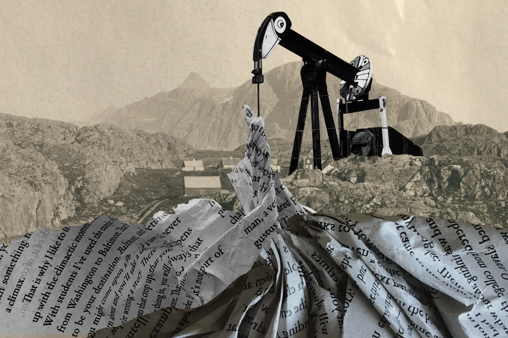

Work: Pacific Standard

In 2019, I created artwork for Emily Moon's story on a cow geneticist.

The first of two pieces I created for Brent Cunningham's piece, Losing the News.
The second piece I created for Brent Cunningham's piece, Losing the News.